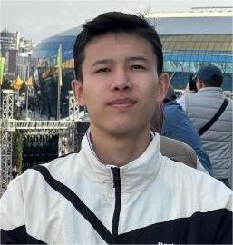
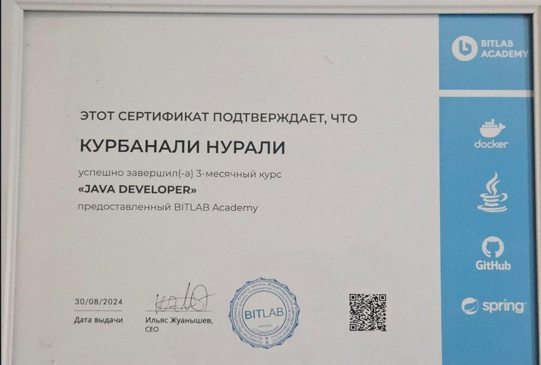

Kurbanali Nurali
Date of birth: 04.02.2006 г.
Education:
Narxoz University
Bitlab Academy (Java Developer)
Bachelor in Cybersecurity
Desired role:
Information Security Intern
Hard Skills
Skilled Cybersecurity student with a strong background in network infrastructure, cryptographic concepts, and secure software development. Knowledgeable in the analysis of undetectable malware (FUD) and the setup of routed/switched networks.
Soft Skills:
Responsibility
Efficiency
Attentiveness
Honesty
Good communication skills
Quick learner
Punctual
LANGUAGES
Russian
Kazakh
English (intermediate)
Hobbies
Sport
Gym
Swimming
etc.
Finished Courses & Certificates

Java Development
Fortinet
Contacts:
Almaty , district-Algabas
phone:
+7 707 647 83 06
email:
kurbanali.n02@gmail.com